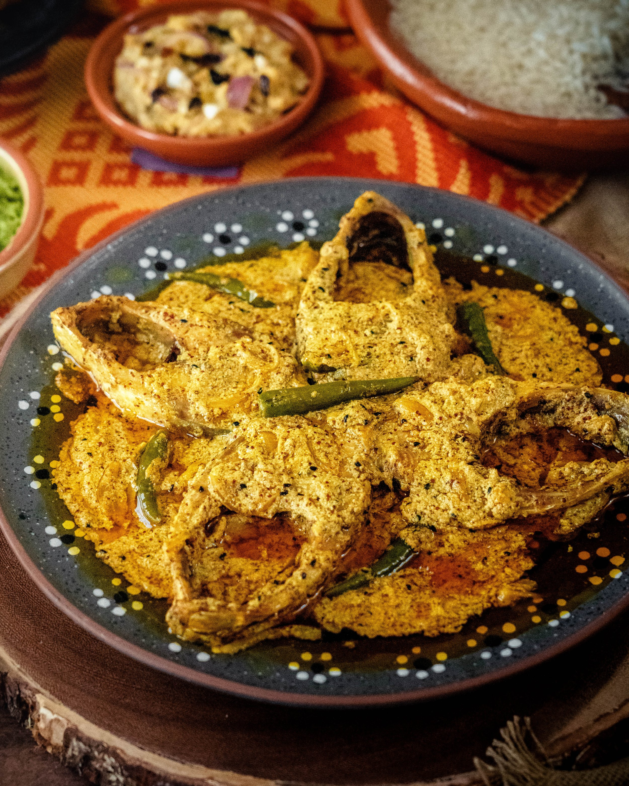

Hilsa Fish Curry (The Bangali Way)

Despcrition
Shorshe Ilish is one of Bengal's most iconic and cherished dishes—a
true celebration of flavors and culture. Made with the prized
Hilsa (Ilish) fish, known for its soft texture and rich flavor,
this dish is infused with the bold, pungent notes of freshly ground
mustard and the sharp heat of green chilies. Cooked traditionally in mustard oil,
Shorshe Ilish is both simple and deeply flavorful, capturing the essence of Bengali cuisine
in every bite. It's best enjoyed with a steaming plate of plain white rice, letting the
fragrant mustard gravy shine.
Ingredients
- Hilsa fish (Ilish) - 6 pieces (medium sized)
- Mustard seeds - 2 tbps (use a mix of yellow and black if you like)
- Green chilies - 4-6 (slit or whole)
- Turmeric powder - 1 tsp
- Salt - to taste
- Mustard oil - 4-5 tbps
- Water - as required
- Nigella seeds (Kalonji) - 1/2 tsp (optional)
- Fresh corainder leaves (optional)
- Red chilli powder - 1/2 tsp (optional)
Steps
- Prepping the Fish
- Clean the Hilsa fish pieces gently. It's a delicate fish, so handle with care.
- Rub the fish with salt and turmeric. Let it marinate for about 15 minutes.
- Make the Mustard Paste
- Soak mustard seeds in warm water for 10-15 minutes.
- Grind them into a smooth paste with a pinch of salt, 2 green
chilies, and a few drops of water. You can also add a few
grains of rice while grinding to prevent bitterness.
- Fry the Fish (Optional)
- In traditional recipes, the fish is often lightly fried
in mustard oil to firm it up, but you can skip this to retain
the soft, delicate texture.
- Heat mustard oil until it smokes (mustard oil must be heated well),
then lightly fry the fish pieces and set aside.
- Make the Curry
- In the same pan, reduce the oil slightly if needed.
- Add kalonji seeds and let them splutter.
- Add the mustard paste and cook for 2-3 minutes.
- Add turmeric, salt, and some slit green chilies.
- Pour in about 1 to 1½ cups of warm water to form the curry base.
- Let it come to a gentle boil.
- Add the Fish
- Gently place the Hilsa fish pieces into the simmering mustard gravy.
- Cover and cook for 8-10 minutes on medium flame. Avoid stirring
too much to prevent breaking the fish.
- Add a drizzle of raw mustard oil at the end for that signature punch.
- Serve!
- Serve hot with steamed rice.
- Garnish with fresh green chilies or coriander (optional).
Back to Home Page